# LIBNAME mylib "P:\";
# FILENAME bigrec "P:\fa15_data.txt" LRECL = 65576;
# DATA mytemp;
# INFILE bigrec;
# INPUT
# myid 1-7
# purchase_online_safe_aglo 5526
# purchase_online_safe_agli 5564
# purchase_online_safe_neit 5640
# purchase_online_safe_dgli 5678
# purchase_online_safe_dglo 5716
# buy_online_aglo 5518
# buy_online_agli 5556
# buy_online_neit 5632
# buy_online_dgli 5670
# buy_online_dglo 5708
# use_devices_for_deal_aglo 5508
# use_devices_for_deal_agli 5546
# use_devices_for_deal_neit 5622
# use_devices_for_deal_dgli 5660
# use_devices_for_deal_dglo 5698
# hear_products_email_aglo 5525
# hear_products_email_agli 5563
# hear_products_email_neit 5639
# hear_products_email_dgli 5677
# hear_products_email_dglo 5715
# internet_chnge_shop_aglo 5495
# internet_chnge_shop_agli 5533
# internet_chnge_shop_neit 5609
# internet_chnge_shop_dgli 5647
# internet_chnge_shop_dglo 5685
# environ_friendly_aglo 4181
# environ_friendly_agli 4195
# environ_friendly_neit 4223
# environ_friendly_dgli 4237
# environ_friendly_dglo 4251
# recycle_prods_aglo 4190
# recycle_prods_agli 4204
# recycle_prods_neit 4232
# recycle_prods_dgli 4246
# recycle_prods_dglo 4260
# environ_good_business_aglo 4182
# environ_good_business_agli 4196
# environ_good_business_neit 4224
# environ_good_business_dgli 4238
# environ_good_business_dglo 4252
# environ_personal_ob_aglo 4184
# environ_personal_ob_agli 4198
# environ_personal_ob_neit 4226
# environ_personal_ob_dgli 4240
# environ_personal_ob_dglo 4254
# comp_help_cons_env_aglo 4183
# comp_help_cons_env_agli 4197
# comp_help_cons_env_neit 4225
# comp_help_cons_env_dgli 4239
# comp_help_cons_env_dglo 4253
# adidas_brand 42607;
# RUN;
# \* the above reads in the raw data from the data file - now create five point scale variables \*/
# \* now before we create variables lets create formats so we know what each value will mean \*/
# PROC FORMAT;
# VALUE myscale
# 1 = "disagree a lot"
# 2 = "disagree a little"
# 3 = "neither agree nor disagree"
# 4 = "agree a little"
# 5 = "agree a lot";
# VALUE yesno
# 0 = "no"
# 1 = "yes";
# RUN;
# \* do that by creating a new temp sas data set myvars by starting with the temp sas data set mytemp \*/
# DATA myvars;
# SET mytemp;
# IF purchase_online_safe_dglo = 1 THEN purchase_online_safe = 1;
# IF purchase_online_safe_dgli = 1 THEN purchase_online_safe = 2;
# IF purchase_online_safe_neit = 1 THEN purchase_online_safe = 3;
# IF purchase_online_safe_agli = 1 THEN purchase_online_safe = 4;
# IF purchase_online_safe_aglo = 1 THEN purchase_online_safe = 5;
# IF buy_online_dglo = 1 THEN buy_online = 1;
# IF buy_online_dgli = 1 THEN buy_online = 2;
# IF buy_online_neit = 1 THEN buy_online = 3;
# IF buy_online_agli = 1 THEN buy_online = 4;
# IF buy_online_aglo = 1 THEN buy_online = 5;
# IF use_devices_for_deal_dglo = 1 THEN use_devices_for_deal = 1;
# IF use_devices_for_deal_dgli = 1 THEN use_devices_for_deal = 2;
# IF use_devices_for_deal_neit = 1 THEN use_devices_for_deal = 3;
# IF use_devices_for_deal_agli = 1 THEN use_devices_for_deal = 4;
# IF use_devices_for_deal_aglo = 1 THEN use_devices_for_deal = 5;
# IF hear_products_email_dglo = 1 THEN hear_products_email = 1;
# IF hear_products_email_dgli = 1 THEN hear_products_email = 2;
# IF hear_products_email_neit = 1 THEN hear_products_email = 3;
# IF hear_products_email_agli = 1 THEN hear_products_email = 4;
# IF hear_products_email_aglo = 1 THEN hear_products_email = 5;
# IF internet_chnge_shop_dglo = 1 THEN internet_chnge_shop = 1;
# IF internet_chnge_shop_dgli = 1 THEN internet_chnge_shop = 2;
# IF internet_chnge_shop_neit = 1 THEN internet_chnge_shop = 3;
# IF internet_chnge_shop_agli = 1 THEN internet_chnge_shop = 4;
# IF internet_chnge_shop_aglo = 1 THEN internet_chnge_shop = 5;
# IF environ_friendly_dglo = 1 THEN environ_friendly = 1;
# IF environ_friendly_dgli = 1 THEN environ_friendly = 2;
# IF environ_friendly_neit = 1 THEN environ_friendly = 3;
# IF environ_friendly_agli = 1 THEN environ_friendly = 4;
# IF environ_friendly_aglo = 1 THEN environ_friendly = 5;
# IF recycle_prods_dglo = 1 THEN recycle_prods = 1;
# IF recycle_prods_dgli = 1 THEN recycle_prods = 2;
# IF recycle_prods_neit = 1 THEN recycle_prods = 3;
# IF recycle_prods_agli = 1 THEN recycle_prods = 4;
# IF recycle_prods_aglo = 1 THEN recycle_prods = 5;
# IF environ_good_business_dglo = 1 THEN environ_good_business = 1;
# IF environ_good_business_dgli = 1 THEN environ_good_business = 2;
# IF environ_good_business_neit = 1 THEN environ_good_business = 3;
# IF environ_good_business_agli = 1 THEN environ_good_business = 4;
# IF environ_good_business_aglo = 1 THEN environ_good_business = 5;
# IF environ_personal_ob_dglo = 1 THEN environ_personal_ob = 1;
# IF environ_personal_ob_dgli = 1 THEN environ_personal_ob = 2;
# IF environ_personal_ob_neit = 1 THEN environ_personal_ob = 3;
# IF environ_personal_ob_agli = 1 THEN environ_personal_ob = 4;
# IF environ_personal_ob_aglo = 1 THEN environ_personal_ob = 5;
# IF comp_help_cons_env_dglo = 1 THEN comp_help_cons_env = 1;
# IF comp_help_cons_env_dgli = 1 THEN comp_help_cons_env = 2;
# IF comp_help_cons_env_neit = 1 THEN comp_help_cons_env = 3;
# IF comp_help_cons_env_agli = 1 THEN comp_help_cons_env = 4;
# IF comp_help_cons_env_aglo = 1 THEN comp_help_cons_env = 5;
# IF adidas_brand = . THEN adidas = 0;
# IF adidas_brand = 1 THEN adidas = 1;
# FORMAT purchase_online_safe buy_online use_devices_for_deal hear_products_email internet_chnge_shop environ_friendly recycle_prods environ_good_business environ_personal_ob comp_help_cons_env myscale.
# adidas yesno. ;
# RUN;
# PROC FACTOR DATA = myvars
# MAXITER=100
# METHOD=principal
# MINEIGEN=1
# ROTATE=varimax
# MSA
# SCREE
# SCORE
# PRINT
# NFACTORS=2
# OUT=myscores;
# VAR purchase_online_safe
# buy_online
# use_devices_for_deal
# hear_products_email
# internet_chnge_shop
# environ_friendly
# recycle_prods
# environ_good_business
# environ_personal_ob
# comp_help_cons_env;
# RUN;
# DATA myscores1;
# SET myscores;
# RENAME factor1 = onlineshopper;
# RENAME factor2 = environconscious;
# RENAME my_id = resp_id;
# RUN;Time Series
In the field of data analysis, a robust understanding of statistical concepts is essential for accurate and insightful interpretation of data. This section provides a comprehensive overview of fundamental statistical principles and methodologies applied during my practicum in the UTSA Master’s program in Data Analytics. The emphasis is on leveraging these principles to analyze diverse datasets using advanced statistical software and tools, including R Studio, GRETL, Python, and SAS Enterprise.
The report begins with an exploration of time series analysis, followed by an examination of the Durbin-Watson statistic, and then proceeds with ARIMA modeling. It also includes examples of code used in SAS 94 New Cluster and concludes with a discussion of key statistical concepts.
Various techniques were employed, such as Autocorrelation Function (ACF) plots and formal statistical tests including the KPSS and Augmented Dickey-Fuller (ADF) tests.
Time Series Analysis: Wind Speed in Delhi
Introduction: The goal of this section is to analyze time series datasets by investigating whether their mean remains constant over time. This analysis involves importing time series data into GRETL , visualizing the data, and applying statistical tests to determine whether the time series exhibits a constant mean. The methods used include visual inspection through plotting and formal statistical testing via the KPSS and Augmented Dickey-Fuller (ADF) tests.
Dataset: Wind Speed in Delhi The first dataset selected for analysis records wind speed (measured in km/h) in Delhi, India, from January 1, 2013, to April 24, 2017.
To begin the analysis, the wind speed data was plotted over time. By visually inspecting the plot, it appeared that the mean wind speed remained relatively constant throughout the time period. However, a subtle trend was observable in certain segments of the data, which warranted further investigation.
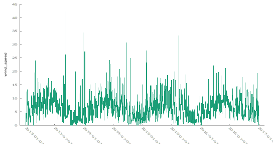
An autocorrelation function (ACF) plot was generated to assess the presence of autocorrelation and trends. The ACF plot exhibited a slight decrease in correlation as the lag increased, indicating autocorrelation in the dataset. This trend suggested that the mean might not be perfectly constant across the entire time series.
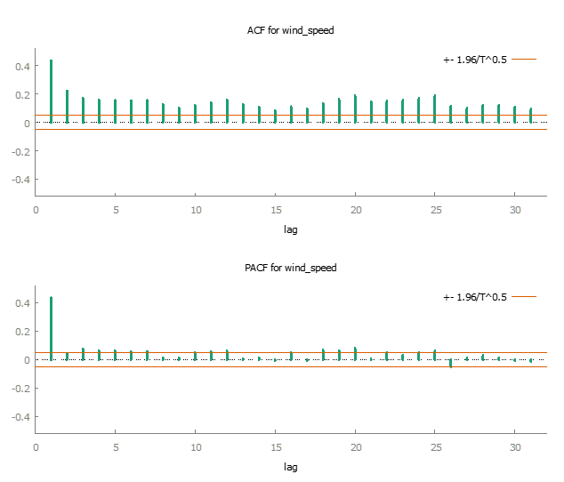
To formally test for a constant mean, two statistical tests were applied to the dataset:
- KPSS Test: The null hypothesis (Ho) of the KPSS test states that the mean is constant over time. The test statistic for the wind speed dataset was 0.216261, and with a p-value greater than 0.10, we failed to reject the null hypothesis. Thus, the KPSS test suggested that the mean wind speed is constant over time.
T = 1462
Lag truncation parameter = 7
Test statistic = 0.216261
10% 5% 1%
Critical values: 0.348 0.462 0.743
P-value \> .10- Augmented Dickey-Fuller (ADF) Test: The ADF test’s null hypothesis (Ho) posits that the series has a unit root, implying a non-constant mean. The test statistic for the wind speed data was -4.11449, with a p-value of 0.0009163. This result led to the rejection of the null hypothesis, indicating that the mean wind speed was likely constant over time.
Augmented Dickey-Fuller test for wind_speed
testing down from 23 lags, criterion AIC
sample size 1438
unit-root null hypothesis: a = 1
test with constant
including 23 lags of (1-L)wind_speed
model: (1-L)y = b0 + (a-1)\*y(-1) + \... + e
estimated value of (a - 1): -0.211152
test statistic: tau_c(1) = -4.11449
asymptotic p-value 0.0009163
1st-order autocorrelation coeff. for e: -0.003
lagged differences: F(23, 1413) = 3.597 \[0.0000\]In conclusion, this analysis applied visual inspection, ACF plots, and statistical tests to assess whether the mean of two time series datasets remained constant over time. The results varied across datasets. For the wind speed data, both visual inspection and statistical testing suggested a constant mean over time. In the case of Microsoft stock volume, the KPSS test indicated a non-constant mean, while the ADF test suggested otherwise, pointing to the importance of using multiple tests in time series analysis. This report demonstrates how combining visual methods with formal statistical testing can provide a robust understanding of the characteristics of time series data.
Time Series Analysis: Microsoft Stock
Dataset 2: Microsoft Stock- Time Series Analysis
This analysis focuses on the stock trading volume for Microsoft from April 1, 2015, to April 1, 2021. The objective was to examine the behavior of the stock volume over time and determine whether its mean remained constant.
The initial visual inspection of the Microsoft stock trading volume plot indicated that the mean volume appeared relatively stable throughout the observation period. There were no noticeable upward or downward trends in the data.

To gain a deeper understanding, we analyzed the autocorrelation function (ACF) plot. The ACF plot demonstrated a gradual decline in autocorrelation as the lag increased, suggesting some level of autocorrelation in the dataset. However, this plot alone did not provide a clear indication of a trend or non-constant mean.

To gain a more rigorous understanding of whether the mean stock trading volume remained constant over time, we employed two key statistical tests:
KPSS Test: For the stock volume data, the KPSS test yielded a test statistic of 0.646783 and a p-value of 0.024. Given that the p-value is below the significance threshold of 0.05, we reject the null hypothesis. This result indicates that the mean stock volume is not constant over the observed period.
T = 1511
Lag truncation parameter = 7
Test statistic = 0.646783
10% 5% 1%
Critical values: 0.348 0.462 0.743
Interpolated p-value 0.024Following the KPSS test, we also applied the Augmented Dickey-Fuller (ADF) test to further investigate the stability of the stock trading volume:
Augmented Dickey-Fuller (ADF) Test: The ADF test produced a test statistic of -6.89966 and a p-value of 6.158e-10. Since the p-value is significantly below the significance level, we reject the null hypothesis of a non-constant mean. This result supports the conclusion that the mean trading volume was indeed constant over the observed period.
Augmented Dickey-Fuller test for Volume
testing down from 23 lags, criterion AIC
sample size 1502
unit-root null hypothesis: a = 1
test with constant
including 8 lags of (1-L)Volume
model: (1-L)y = b0 + (a-1)\*y(-1) + \... + e
estimated value of (a - 1): -0.185615
test statistic: tau_c(1) = -6.89966
asymptotic p-value 6.158e-10
1st-order autocorrelation coeff. for e: -0.001
lagged differences: F(8, 1492) = 13.263 \[0.0000\]In conclusion this analysis applied visual inspection, ACF plots, and statistical tests to assess whether the mean of two time series datasets remained constant over time. The results varied across datasets. For the wind speed data, both visual inspection and statistical testing suggested a constant mean over time. In the case of Microsoft stock volume, the KPSS test indicated a non-constant mean, while the ADF test suggested otherwise, pointing to the importance of using multiple tests in time series analysis. This report demonstrates how combining visual methods with formal statistical testing can provide a robust understanding of the characteristics of time series data.
Time Series Data Analysis Report 2: Forecasting from Gold Price
Objective:
The aim of this analysis is to apply time series forecasting techniques to historical gold price data. By employing various statistical tests and models, we seek to predict future gold prices and assess the stationarity of the dataset.
Introduction:
Gold has long been a valuable commodity, widely used in jewelry and as an investment asset. Prices for gold fluctuate daily due to a variety of economic factors and are actively traded on global commodity exchanges. This project uses historical gold price data to forecast future prices, applying time series forecasting methods to gain insights into market trends.
Dataset:
For this analysis, we utilized a dataset from Quandl, which provides extensive financial and economic data. This dataset includes daily gold prices spanning several decades, beginning in the 1970s. You can access the dataset here: Gold Price Time Series
Data Visualization:
The first step in our analysis involved plotting the raw time series data of gold prices. The resulting plot shows significant fluctuations over time, suggesting a non-constant mean and variance. These visual indications imply that the time series may be non-stationary.
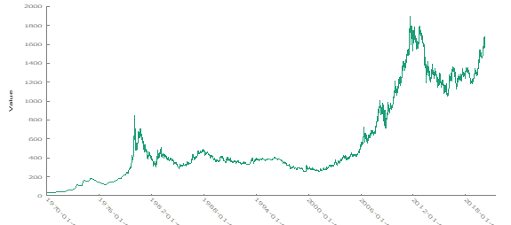
To further investigate, we examined the Autocorrelation Function (ACF) and Partial Autocorrelation Function (PACF) to better understand the underlying characteristics of the time series. The ACF plot suggest that no consistent pattern across the data, suggesting a non-constant mean. The lack of clear trends in the ACF supports our earlier conclusion of non-stationarity.
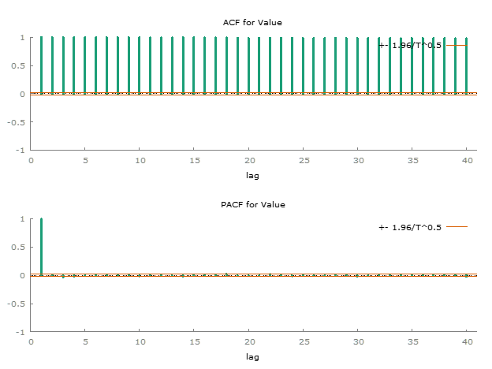
To confirm the stationarity of the dataset, we conducted two statistical tests, the KPSS test and the Augmented Dickey-Fuller (ADF) test.
- KPSS test for Value:
T = 10787
Lag truncation parameter = 12
Test statistic = 55.3031
10% 5% 1%
Critical values: 0.347 0.462 0.744
P-value \< .01H0: no evidence data has more than one mean (fits stationary criteria)
Ha: data has more than one mean (e.g. non-stationary)
Because p < .05, we reject H0 and so there is evidence of more than one mean. (It is non-stationary)
- Augmented Dickey-Fuller test for Value
testing down from 38 lags, criterion AIC
sample size 10754
unit-root null hypothesis: a = 1
test with constant
including 32 lags of (1-L)Value
model: (1-L)y = b0 + (a-1)\*y(-1) + \... + e
estimated value of (a - 1): -3.11791e-005
test statistic: tau_c(1) = -0.155837
asymptotic p-value 0.9415
1st-order autocorrelation coeff. for e: 0.000
lagged differences: F(32, 10720) = 4.775 \[0.0000\]H0: data has more than one mean (e.g. non-stationary)
Ha: data has one mean (e.g. stationary)
Since the p-value is greater than 0.05, we do not reject the null hypothesis, which suggests that the data is non-stationary. Both tests confirm that the gold price dataset exhibits non-stationarity.
To address this, we applied differencing to the time series to remove the trend and stabilize the mean. The plot of the differenced data is shown below:
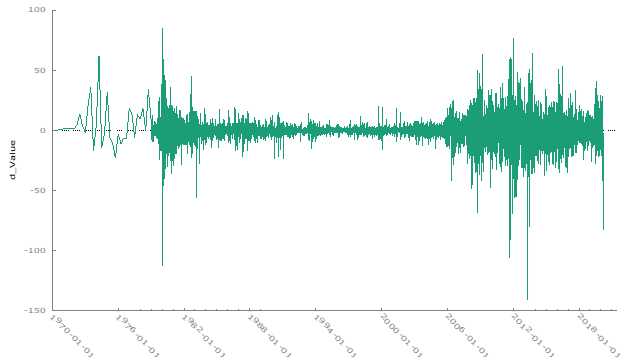
After differencing, the data appears more stationary, with the trend and non-constant mean effectively removed. The ACF and PACF plots further indicate that differencing was successful in stabilizing the series, suggesting that the data is now stationary.
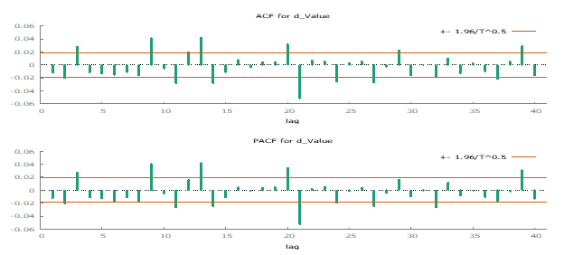
To validate the stationarity of the differenced data, we applied the KPSS and ADF tests again.
- KPSS Test Results on Differenced Data
T = 10786
Lag truncation parameter = 12
Test statistic = 0.136227
10% 5% 1%
Critical values: 0.347 0.462 0.744
P-value \> .10H0: no evidence data has more than one mean (fits stationary criteria)
Ha: data has more than one mean (e.g. non-stationary)
Since the p-value is greater than 0.05, we fail to reject the null hypothesis, indicating that the differenced data is stationary.
- Augmented Dickey-Fuller test for Differenced Data
testing down from 38 lags, criterion AIC
sample size 10747
unit-root null hypothesis: a = 1
test with constant
including 38 lags of (1-L)d_Value
model: (1-L)y = b0 + (a-1)\*y(-1) + \... + e
estimated value of (a - 1): -1.11688
test statistic: tau_c(1) = -17.5688
asymptotic p-value 3.402e-42
1st-order autocorrelation coeff. for e: 0.000
lagged differences: F(38, 10707) = 4.529 \[0.0000\]H0: data has more than one mean (e.g. non-stationary)
Ha: data has one mean (e.g. stationary)
Given the extremely low p-values from both the KPSS and ADF tests, we reject the null hypothesis (H₀). This confirms that the differenced data is stationary. Consequently, we will proceed with the differenced time series data for further analysis.
Next, we examined the Autocorrelation Function (ACF) and Partial Autocorrelation Function (PACF) plots to assess the presence of autoregressive (AR) and moving average (MA) processes. The ACF and PACF plots revealed both negative and positive lags in the data, indicating the presence of autoregressive and moving average components.
Additional Resources: Duke University & Penn State

We then experimented with various ARIMA models and evaluated their performance based on several metrics. The results are summarized in the table below:
| Model | Adjusted R-squared | AIC | BIC (Schwartz) | Hannan-Quinn | Ljung-Box | ARCH p-value |
|---|---|---|---|---|---|---|
| (1,0,1) | 0.0002 | 78091.04 | 78120.19 | 78100.87 | 0.001281 | 6.90E-211 |
| (2,0,1) | 0.0016 | 78081.13 | 78117.56 | 78093.41 | 0.02874 | 2.30E-209 |
| (1,0,2) | 0.001205 | 78081.19 | 78117.62 | 78093.48 | 0.02738 | 2.39E-209 |
| (1,0,3) | 0.001158 | 78082.70 | 78097.45 | 78126.42 | 0.09325 | 1.36E-207 |
| (2,0,2) | 0.004335 | 78048.39 | 78092.11 | 78063.13 | 0.1218 | 1.96E-201 |
After reviewing the performance metrics, I selected the (2,0,2) model as the best fit for the data. This model has the highest adjusted R-squared value and the lowest AIC and BIC values, indicating better overall model fit.
We plotted the observed versus fitted data for the selected time series models to evaluate their performance:
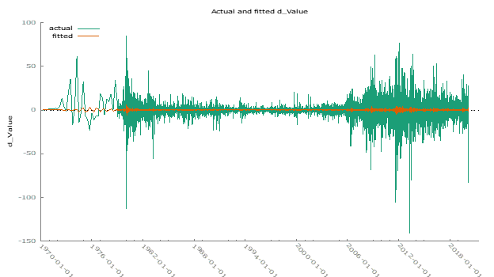
Using the selected (2,0,2) model, we forecasted gold prices for six periods ahead. The forecast aligns well with historical data, although further validation over a longer horizon is recommended.
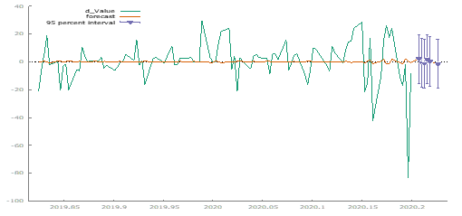
Variance Testing:
The ARCH test results indicate significant non-constant variance in the selected model. Despite this, no immediate corrective measures are planned.
| Model | Adjusted R-squared | AIC | BIC (Schwartz) | Hannan-Quinn | Ljung-Box | ARCH p-value |
|---|---|---|---|---|---|---|
| (1,0,1) | 0.0002 | 78091.04 | 78120.19 | 78100.87 | 0.001281 | 6.90E-211 |
| (2,0,1) | 0.0016 | 78081.13 | 78117.56 | 78093.41 | 0.02874 | 2.30E-209 |
| (1,0,2) | 0.001205 | 78081.19 | 78117.62 | 78093.48 | 0.02738 | 2.39E-209 |
| (1,0,3) | 0.001158 | 78082.70 | 78097.45 | 78126.42 | 0.09325 | 1.36E-207 |
| (2,0,2) | 0.004335 | 78048.39 | 78092.11 | 78063.13 | 0.1218 | 1.96E-201 |
Overall, the analysis confirms the stationarity of the differenced gold price data and identifies the (2,0,2) ARIMA model as the most suitable for forecasting, despite some issues with variance constancy.
Durbin Watson Test on Time Series Data
Introduction:
This report presents the application of the Durbin-Watson test to detect autocorrelation in time series data, specifically using multiple regression on retail datasets. The objective is to determine whether the regression residuals display autocorrelation, which would violate a key assumption of linear regression: that the error terms are independent.
Autocorrelation in residuals can lead to biased and inefficient estimates of regression coefficients, as well as incorrect inferences, such as inflated t-statistics and misleading confidence intervals. The Durbin-Watson test statistic is employed to assess the presence of autocorrelation.
Time Series Examination of Retail 1
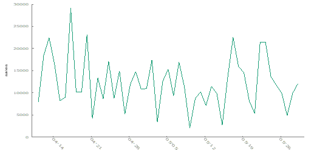
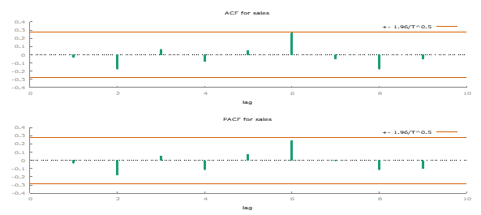
Initial visual inspection of the Retail 1 data, using the “Mark I Eyeball” method, indicates a constant mean with no significant trend. This observation is promising for the assumption of uncorrelated error terms.
Further analysis with the autocorrelation function (ACF) plot shows some minor autocorrelation but not severe enough to cause major concerns.
Durbin-Watson Test Results for Retail 1:
For a sample size of T = 49, the Durbin-Watson test boundaries at α = 0.05 are:
Lower Bound (DL): 1.141
Upper Bound (DU): 1.499
To further investigate, I ran an Ordinary Least Squares (OLS) regression on the Retail 1 data using GRETL. Below are the key metrics from the regression:
| Metric | Value |
|---|---|
| Model | High-Precision OLS, using observations (T = 49) |
| Dependent Variable | Sales |
| Coefficient (const) | 1.2226 x 10^4 |
| Std. Error (const) | 829.31 |
| Mean Dependent Var | 1.2226 x 10^4 |
| S.D. Dependent Var | 5.8052 x 10^3 |
| Sum Squared Resid | 1.6176 x 10^9 |
| S.E. of Regression | 5.8052 x 10^3 |
| R-squared | -5.1817 x 10^-77 |
| Adjusted R-squared | -5.1817 x 10^-77 |
| F(1, 48) | 217.34 |
| P-value(F) | 1.9018 x 10^-19 |
| Log-Likelihood | -493.68 |
| Akaike Criterion | 989.36 |
| Schwarz Criterion | 991.26 |
| Hannan-Quinn | 990.08 |
| Rho | -0.0302 |
| Durbin-Watson | 2.049 |
The Durbin-Watson statistic of 2.049 exceeds the upper bound (DU), indicating no significant autocorrelation. Thus, the residuals of Retail 1 do not exhibit significant autocorrelation, validating the regression results under the assumption of independent errors.
Time Series Examination of Retail 2 Dataset
For Retail 2, visual inspection also shows a constant mean and no significant trend. The ACF plot indicates minor autocorrelation, but it is not severe enough to challenge the assumption of uncorrelated error terms.
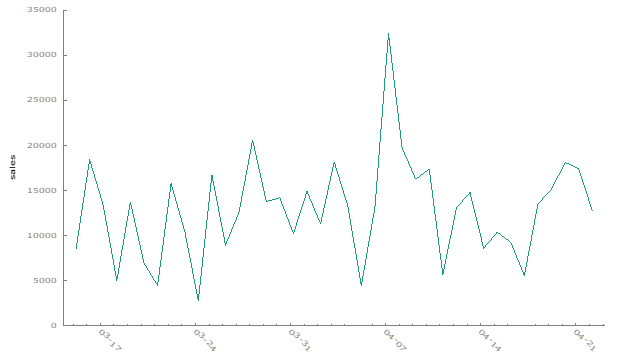
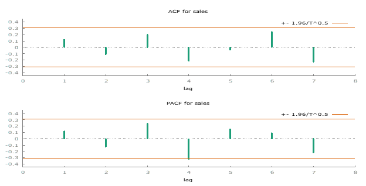
Durbin-Watson Test Results for Retail 2:
For a sample size of T = 39, the Durbin-Watson test boundaries at α = 0.05 are:
Lower Bound (DL): 1.376
Upper Bound (DU): 1.604
Running an OLS regression on the Retail 2 data in GRETL provides the following results:
| Metric | Value |
|---|---|
| Model | High-Precision OLS, using observations 2011-03-15:2011-04-22 (T = 39) |
| Dependent Variable | Sales |
| Coefficient (const) | 1.2849 x 10^4 |
| Std. Error (const) | 901.07 |
| Mean Dependent Var | 1.2849 x 10^4 |
| S.D. Dependent Var | 5.6272 x 10^3 |
| Sum Squared Resid | 1.2033 x 10^9 |
| S.E. of Regression | 5.6272 x 10^3 |
| R-squared | -6.9089 x 10^-77 |
| Adjusted R-squared | -6.9089 x 10^-77 |
| F(1, 38) | 203.35 |
| P-value(F) | 7.7600 x 10^-17 |
| Log-Likelihood | -391.61 |
| Akaike Criterion | 785.22 |
| Schwarz Criterion | 786.89 |
| Hannan-Quinn | 785.82 |
| Rho | 0.1236 |
| Durbin-Watson | 1.737 |
The Durbin-Watson statistic of 1.737 is between the lower bound (DL) and upper bound (DU), indicating no significant autocorrelation. Thus, the residuals of Retail 2 also do not exhibit significant autocorrelation, validating the regression results under the assumption of independent errors.
Summary:
The Durbin-Watson test results for both Retail 1 and Retail 2 datasets suggest that autocorrelation is not a significant issue. The residuals in the regression models are uncorrelated, which supports the validity of the regression results. The assumption of independent errors is upheld, ensuring the reliability of the models used.
ARIMA Model Comparison
This report analyzes the unemployment rate in the US from January 1948 to March 2020. The analysis involves plotting the time series data, differencing to achieve stationarity, and fitting various ARIMA models to the differenced data. The models are evaluated using several metrics, including AIC, BIC, and the Ljung-Box test.
Time Series Plot: The plot below shows the unemployment rate from January 1948 to March 2020.
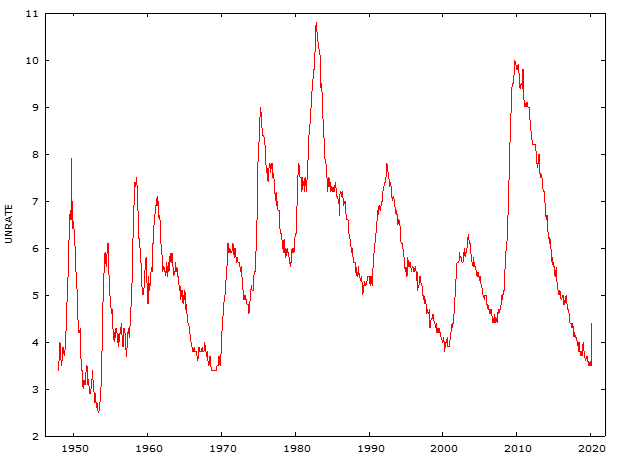
Differenced Data Plot: The first differenced data is used to achieve stationarity, as illustrated in the plot below.
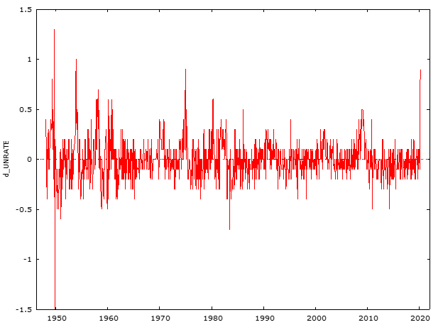
________________________________________________________________________________________
ARIMA Model Analysis
Model 1: ARMA(1,1)
Observations: 1948:02-2020:03 (T = 866)
Dependent Variable: d_UNRATE
Standard Errors: Based on Hessian
| Coefficient | Estimate | Std. Error | z-value | p-value | Significance |
|---|---|---|---|---|---|
| const | 0.002873 | 0.014791 | 0.1942 | 0.8460 | |
| phi_1 | 0.870665 | 0.029667 | 29.3500 | <0.0001 | *** |
| theta_1 | -0.718031 | 0.037947 | -18.9200 | <0.0001 | *** |
Model Fit Statistics:
| Statistic | Value |
|---|---|
| Mean dependent var | 0.001155 |
| S.D. dependent var | 0.209924 |
| Mean of innovations | -0.000378 |
| S.D. of innovations | 0.200521 |
| R-squared | 0.086522 |
| Adjusted R-squared | 0.085465 |
| Log-likelihood | 162.6270 |
| Akaike criterion | -317.2540 |
| Schwarz criterion | -298.1985 |
| Hannan-Quinn | -309.9612 |
Roots of AR and MA Polynomials:
| Type | Root | Real | Imaginary | Modulus | Frequency |
|---|---|---|---|---|---|
| AR | Root 1 | 1.1485 | 0.0000 | 1.1485 | 0.0000 |
| MA | Root 1 | 1.3927 | 0.0000 | 1.3927 | 0.0000 |
________________________________________________________________________________________
Autocorrelation Test:
Ljung-Box Q’ = 75.3636
p-value = 4.042e-012
Model 2: ARMA(2,1)
Observations: 1948:02-2020:03 (T = 866)
Dependent Variable: d_UNRATE
Standard Errors: Based on Hessian
| Coefficient | Estimate | Std. Error | z-value | p-value | Significance |
|---|---|---|---|---|---|
| const | 0.002986 | 0.014898 | 0.2004 | 0.8412 | |
| phi_1 | 0.555245 | 0.062518 | 8.881 | <0.0001 | *** |
| phi_2 | 0.238727 | 0.037380 | 6.386 | <0.0001 | *** |
| theta_1 | -0.538385 | 0.058356 | -9.226 | <0.0001 | *** |
Model Fit Statistics:
| Statistic | Value |
|---|---|
| Mean dependent var | 0.001155 |
| S.D. dependent var | 0.209924 |
| Mean of innovations | -0.000420 |
| S.D. of innovations | 0.196462 |
| R-squared | 0.123133 |
| Adjusted R-squared | 0.121101 |
| Log-likelihood | 180.2785 |
| Akaike criterion | -350.5570 |
| Schwarz criterion | -326.7375 |
| Hannan-Quinn | -341.4410 |
Roots of AR and MA Polynomials:
| Type | Root | Real | Imaginary | Modulus | Frequency |
|---|---|---|---|---|---|
| AR | Root 1 | 1.1911 | 0.0000 | 1.1911 | 0.0000 |
| AR | Root 2 | -3.5169 | 0.0000 | 3.5169 | 0.5000 |
| MA | Root 1 | 1.8574 | 0.0000 | 1.8574 | 0.0000 |
________________________________________________________________________________________
Autocorrelation Test:
Ljung-Box Q’ = 36.8101
p-value = 2.845e-005
Model 3: ARMA(2,2)
Observations: 1948:02-2020:03 (T = 866)
Dependent Variable: d_UNRATE
Standard Errors: Based on Hessian
| Coefficient | Estimate | Std. Error | z-value | p-value | Significance |
|---|---|---|---|---|---|
| const | 0.002579 | 0.011520 | 0.2239 | 0.8228 | |
| phi_1 | 1.655610 | 0.037484 | 44.1700 | <0.0001 | *** |
| phi_2 | -0.782771 | 0.043359 | -18.0500 | <0.0001 | *** |
| theta_1 | -1.641770 | 0.038375 | -42.7800 | <0.0001 | *** |
| theta_2 | 0.863215 | 0.047917 | 18.0100 | <0.0001 | *** |
Model Fit Statistics:
| Statistic | Value |
|---|---|
| Mean dependent var | 0.001155 |
| S.D. dependent var | 0.209924 |
| Mean of innovations | -0.000443 |
| S.D. of innovations | 0.194870 |
| R-squared | 0.137289 |
| Adjusted R-squared | 0.134286 |
| Log-likelihood | 187.0535 |
| Akaike criterion | -362.1069 |
| Schwarz criterion | -333.5236 |
| Hannan-Quinn | -351.1678 |
Roots of AR and MA Polynomials:
| Type | Root | Real | Imaginary | Modulus | Frequency |
|---|---|---|---|---|---|
| AR | Root 1 | 1.0575 | -0.3989 | 1.1303 | -0.0574 |
| AR | Root 2 | 1.0575 | 0.3989 | 1.1303 | 0.0574 |
| MA | Root 1 | 0.9510 | -0.5041 | 1.0763 | -0.0776 |
| MA | Root 2 | 0.9510 | 0.5041 | 1.0763 | 0.0776 |
________________________________________________________________________________________
Autocorrelation Test:
Ljung-Box Q’ = 39.2977
p-value = 4.328e-006
Model 4: ARMA(4,5)
Observations: 1948:02-2020:03 (T = 866)
Dependent Variable: d_UNRATE
Standard Errors: Based on Hessian
| Coefficient | Estimate | Std. Error | z-value | p-value | Significance |
|---|---|---|---|---|---|
| const | 0.002507 | 0.011390 | 0.2201 | 0.8258 | |
| phi_1 | 0.578072 | 0.062491 | 9.250 | <0.0001 | *** |
| phi_2 | 0.117027 | 0.073948 | 1.583 | 0.1135 | |
| phi_3 | 0.611279 | 0.108845 | 5.616 | <0.0001 | *** |
| phi_4 | -0.695650 | 0.055781 | -12.4700 | <0.0001 | *** |
| theta_1 | -0.585967 | 0.067105 | -8.732 | <0.0001 | *** |
| theta_2 | 0.063179 | 0.074000 | 0.8538 | 0.3932 | |
| theta_3 | -0.595233 | 0.107839 | -5.520 | <0.0001 | *** |
| theta_4 | 0.766918 | 0.069361 | 11.060 | <0.0001 | *** |
| theta_5 | 0.030504 | 0.070963 | 0.4299 | 0.6673 |
Model Fit Statistics:
| Statistic | Value |
|---|---|
| Mean dependent var | 0.001155 |
| S.D. dependent var | 0.209924 |
| Mean of innovations | -0.000422 |
| S.D. of innovations | 0.192210 |
| R-squared | 0.160680 |
| Adjusted R-squared | 0.152845 |
| Log-likelihood | 198.7941 |
| Akaike criterion | -375.5881 |
| Schwarz criterion | -323.1854 |
| Hannan-Quinn | -355.5330 |
Roots of AR and MA Polynomials:
| Type | Root | Real | Imaginary | Modulus | Frequency |
|---|---|---|---|---|---|
| AR | Root 1 | 1.0508 | 0.4052 | 1.1262 | 0.0586 |
| AR | Root 2 | 1.0508 | -0.4052 | 1.1262 | -0.0586 |
| AR | Root 3 | -0.6114 | -0.8715 | 1.0646 | -0.3474 |
| AR | Root 4 | -0.6114 | 0.8715 | 1.0646 | 0.3474 |
| MA | Root 1 | 0.9450 | 0.5028 | 1.0704 | 0.0778 |
| MA | Root 2 | 0.9450 | -0.5028 | 1.0704 | -0.0778 |
Autocorrelation Test:
Test for autocorrelation up to order 12:
- Ljung-Box Q’ = 41.5484
- p-value = P(Chi-square(10) > 41.5484) = 1.741e-007
ARIMA Model Analysis Report
Metrics Overview:
The following criteria are used to evaluate the goodness of fit for ARIMA models:
Akaike Information Criterion (AIC): AIC measures the relative fit of a model while penalizing for the number of parameters. Lower values indicate a better model fit.
Bayesian Information Criterion (BIC): Also known as the Schwarz criterion, BIC is similar to AIC but imposes a stricter penalty for additional parameters. It favors simpler models, with lower values indicating a better fit.
Hannan-Quinn Information Criterion (HQIC): HQIC provides a balance between AIC and BIC in terms of penalizing model complexity. It offers a measure of fit with a focus on both model accuracy and simplicity.
BIC and HQIC are more conservative compared to AIC, as they impose higher penalties for additional parameters. Thus, smaller values of these metrics suggest a better model fit, with a preference for models that are more parsimonious.
Ljung-Box Q Statistic:
The Ljung-Box Q test assesses autocorrelation in the residuals of a model.
Null Hypothesis (H0): There is no serial autocorrelation in the residuals.
Alternative Hypothesis (Ha): There is serial autocorrelation in the residuals.
A high p-value (greater than 0.05) suggests that the residuals are not significantly autocorrelated, indicating a good model fit. A low p-value indicates potential autocorrelation in the residuals, which suggests that the model may not fully capture the underlying data structure.
ARIMA Model Comparison
Below is a summary of the evaluated ARIMA models, including their adjusted R-squared, AIC, BIC, and Ljung-Box Q values:
| Model | Adjusted R-squared | AIC | BIC | Ljung-Box Q |
|---|---|---|---|---|
| 1 | 0.085465 | -317.254 | -298.199 | 75.3636 |
| 2 | 0.121101 | -350.557 | -326.738 | 36.8101 |
| 3 | 0.134286 | -362.107 | -333.524 | 39.2977 |
| 4 | 0.152845 | -375.588 | -323.185 | 17.9674 |
Best Model:
Model 4 is identified as the best among the evaluated models. It has the highest adjusted R-squared (0.1528), the lowest AIC (-375.588), and the third lowest BIC (-323.185). Despite the Ljung-Box Q statistic indicating some residual autocorrelation, Model 4 performs best overall in terms of fit statistics.
Residual Variance and Model Exploration
The Ljung-Box test results suggest that some autocorrelation remains in the residuals of the models. The p-values for the Ljung-Box test are below 0.05, indicating that the residuals are not completely free of autocorrelation. This implies that additional variance might be captured by exploring further ARIMA models or adjusting model parameters to improve fit and reduce residual autocorrelation.
SAS Code: ARIMA MODELS
Basic Statistics: Levels of Measurement, and Statistical Techniques
Dependent Variable: A variable that depends on the changes made to the independent variable.
Independent Variable: The variable that you manipulate or control to observe its effect on the dependent variable.
Control Variable: A variable that may affect the dependent variable but is not of primary interest in the study.
Levels of Measurement
- Nominal: Categorical data with distinct groups, without any order or ranking.
- Example: Eye color (brown, black, blue).
- Ordinal: Categorical data that can be ordered or ranked.
- Example: Education levels (high school diploma, bachelor’s, master’s, Ph.D.).
- Interval: Data with equal intervals between values, but no true zero. Example: Temperature in Celsius. Ratio: Data with equal intervals and an absolute zero point.
- Example: Height.
Criteria for Choosing Statistical Techniques
According to the IDRE Chart, two important criteria for selecting a statistical technique are:
- The levels of measurement of both the dependent and independent variables.
- The number of dependent and independent variables.
Additionally, the nature of the research question plays a crucial role in determining the appropriate technique.
Descriptive vs. Inferential Statistics
- Descriptive Statistics: Summarize and present the main features of the data.
- Inferential Statistics: Make predictions and draw conclusions based on the data.
Assumptions in Statistical Tests
- Benefit: Proper assumptions ensure reliable and trustworthy results.
- Cost: Violating assumptions can compromise the validity and credibility of the test.
Impact of Violating Assumptions
Violating the assumptions of a statistical test can undermine the integrity of the analysis, leading to questionable results and a loss of credibility.
Selecting Appropriate Statistical Tests
- Colored Contact Lenses and Gender:
- Variables: Color of lenses (independent), gender (dependent).
- Test: Chi-square test (both variables are nominal).
- Art Auction Prices by Gender:
- Variables: Gender (independent), price paid for art (dependent).
- Test: t-test (price is continuous).
- Vegematic Sales by Product and Demographics:
- Variables: Product color, price, region, gender, household income (independent), number of products sold (dependent).
- Test: ANOVA.
- Magazine Pages and Sales:
- Variables: Number of pages (independent), copies sold (dependent).
- Test: Pearson correlation.
- Hair Growth in Cats by Drug, Gender, and Coat Color:
- Variables: Drug, cat gender, coat color (independent), hair growth (dependent).
- Test: Three-way ANOVA.
Other Key Statical Concepts:
Population and Sample
- Population: The entire set or group being studied.
- Sample: A subset of the population used for the study.
- Inferential Statistics: The goal is to make predictions about the population based on the sample.
Measures of Central Tendency
Mean: The average of all data points.
Median: The middle value when data is arranged in order.
Example: In an exam, the mean tells you the overall class performance, while the median can indicate the typical student’s performance.
Variance and Standard Deviation
Variance: Measures how much data points deviate from the mean.
Standard Deviation: The square root of the variance, indicating the spread of data around the mean.
When data points are tightly packed around the mean, variance and standard deviation are lower.
Confidence Intervals
- Confidence Interval: Represents the range in which a population parameter is expected to fall a certain percentage of the time.
- For example, in a survey of 150 voters where 45% support a candidate, a 95% confidence interval around this proportion ranges from ~0.3704 to 0.5296.
Z-Scores
- Z-Score: Measures how many standard deviations a data point is from the mean.
- Example: For UTSA student ages with a mean of 26 and a standard deviation of 4, the Z-score for a student aged 24 is calculated as:
\[ Z = \frac{24 - 26}{4} = -0.5 \]